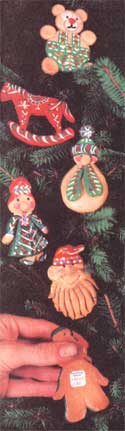

For the last couple of years, we've been making extra seasonal cash what we think is e last an interesting and a fun 'eve been making ... the fabrication of Christmas ornaments from flour, salt, and water.
Now some of you may object to "cashing in" on the glittery materialism of But we feel that anything which is a step away from the plastic minds of the big corporations is a step in the right direction. And we also like the idea that our small enterprise is one that the whole family-right down to the youngest member-can share.
Our raw materials are inexpensive and easy to obtain: flour, salt, water, fine copper wire, toothpicks, tempera paints, several small brushes, and varnish. Any kind of flour (except self-rising) will work, but if you plan to really go into this craft, buy cheap refined white flour. (in our opinion, this is one of the best uses for the stuff.) And the tempera paints are optional, since the natural, warm, golden brown color of the finished dough babies is beautiful enough all by itself. We make both kinds: painted and unpainted.
To construct approximately 25 ornaments, each two to three inches high and about 1/4" thick, mix three cups of flour with one cup of salt and slowly add water until you have a kinds: p consistency to work with. Too much water will make the dough sticky, but that's easy to fix: just leave the sponge exposed to the air about five minutes or until it dries out enough to be kneaded. Then wrap the worked dough in plastic to keep it moist while you pinch off pieces of the mixture and shape them into ornaments. (it's best, obviously, to use a whole batch of the dough at one sitting.)
If you'll form your creations on a square of plastic, you'll find it easy to transfer each finished baby to a cookie sheet or square of aluminum foil for baking. Whenever possible, make rounded basic shapes with your palms and then flatten them to the desired 1/4" thickness. This-and using a toothpick to create any lines or "cuts" that are wanted- eliminates all sharp edges on the final baked pieces.
And don't forget, before you pop a of your babies into the oven, to make a loop of fine copper wire (see drawing) and insert it into the top of each ornament as a hanger. You can buy a small spool of this wire for at most craft or department stores ... or you can unwind an old electric motor. To keep the loops from pulling out, leave their ends spread, press them into the back of the tops of each baby, and then use a toothpick to apply a small dab of dough over the hole you've just made.
One final precaution: To ensure even baking and to prevent your decorations from swelling as they bake, punch holes or make deep cuts (note the deep smile and marks struck into the beard of the "face" baby shown in the photo) in all the thick portions of each ornament. Try to make such holes and cuts part of the decoration's design.
Bake your dough of dough full sheet at a time-at just until they're golden brown. The time will vary, depending on the thickness of the ornaments ... so closely, they out when they're done, and cool.
You're now ready to paint any of the decorations that you've decided to finish off in that manner. We generally use three or colors on each of the babies we paint. Have fun! Use your imagination!
These little ornaments will last for years (even in humid climates) if they're finished off with a protective coating of aheet at a time Make several short hooks from clothes hanger wire, suspend a baby on each one, dip the decorations in the watch 'em and then hang them up on a dowel or artist's paintbrush handle or some other thin stick over a drip trough of aluminum foil that drains back into the of in that can. This is a quick, easy, neat method of finishing off the babies while wasting an absolute minimum of the protective coating.
The first year we tried to sell these homemade Christmas ornaments, we took some to a local (southeastern Kansas) fall festival ... and went home with a little more than $100. With that encouragement under our belt, we made more of the babies, sold them at other fairs, and consigned or wholesaled them to a few college book stores, craft shops, flower shops, and other outlets.
The extra consignment and wholesale business is welcomed, of course, but we still have the most fun retailing our decorations direct to the final customer outdoors in the crisp autumn air at fairs and festivals. (Sometimes, when we pretend we aren't watching, we even see some sly trying to nibble a bite off one of these delicious looking "cookies" which isn't really possible, since the ornaments are as hard as a young bride's first batch of biscuits baked in a wood stove.)
We price our babies at between fairs and $1.50 each (note the sticker on the back of the ornament held by hand in the accompanying photo), depending on how elaborate each one is. Most fall into the $1.00 to $1.25 range. It's always good to have at least two different prices ... but don't get carried away with pricing your decorations too individually.
You could probably make this seasonal business about as big as you want it to be ... but we prefer to keep ours a small "family having fun around the kitchen stove" sort of thing. Our first season out we cleared $300 ... and the next yearby starting a little earlier and being somewhat more organized-we netted $500. We figure that ain't bad, considering the good times our dough babies have given us.
So-whether for fun or profit or both-get the family together, invite your friends over, break out the apple cider ... and try your hand at crafting a few bread dough babies. We think you're gonna like it!
|
 |
|
|